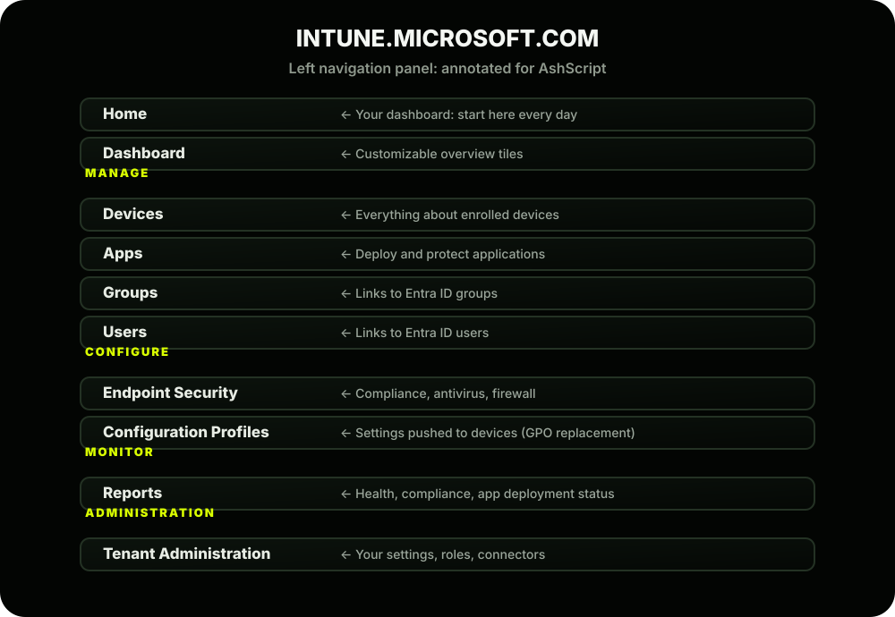
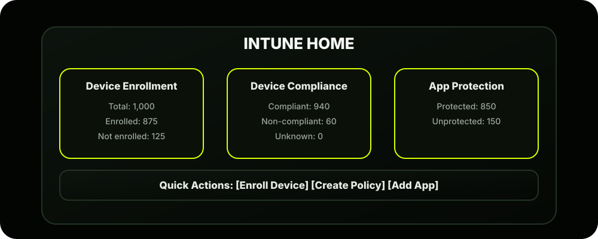

The Scene
It's Ashpak's first morning with a live tenant. Licenses are assigned, the domain is verified, and the MDM authority is set. He opens his browser, navigates to intune.microsoft.com , and logs in with his ashpak.it@ashscript.com account.
The dashboard loads.
For a moment, he just stares at it. There are menus everywhere. Tiles. Numbers. Links. It's a lot to take in.
His colleague Priya leans over:
That's exactly what we're going to do right now.
The Golden Rule of the Intune Portal
Every single menu item in the portal maps to one of these four questions. Keep this in mind as we explore.
The Portal Layout: Full Map
Here's the complete left navigation panel of the Intune Admin Center, annotated for AshScript:

Deep Dive: Every Major Section Explained
Let's walk through each section the way Ashpak would on his first day; not just what it is, but what real tasks live inside it.
1. Home & Dashboard
URL: intune.microsoft.com (landing page)
This is your daily health check view. The moment you log in, you should be scanning this page like a pilot checking instruments before takeoff.
What you'll see:

2. Devices: The Heart of Intune
Path: intune.microsoft.com → Devices
This is where Ashpak will spend most of his time. Let's open it up and explore every sub-section:
| Section | What lives inside |
|---|---|
| Overview | Summary of all enrolled devices by platform; Windows | macOS | iOS | Android | Linux |
| All Devices | Full inventory list; every enrolled device. Click any device → see device name, serial number, OS version; last check-in time; assigned user; compliance status; installed apps; applied policies; hardware info (RAM, storage, model) |
| Monitor | Enrollment failures, non-compliant devices, devices with policy errors |
| Enrollment | All enrollment methods and settings: Windows Autopilot; Apple enrollment (ADE for macOS/iOS); Android enrollment profiles; Enrollment restrictions; BYOD settings |
| Configuration Profiles | All settings pushed to devices (Wi-Fi, VPN, email, restrictions, etc.) |
| Compliance Policies | Rules defining what "healthy" means per platform |
| Scripts & Remediations | PowerShell scripts for Windows, Shell scripts for macOS |
The most important view inside Devices:
Path: Devices → All Devices → Click any device
This single device view is your troubleshooting home base. When a user calls helpdesk saying "my policies aren't applying"; this is the first place you look.
3. Apps: Deploy and Protect
Path: intune.microsoft.com → Apps
| Section | What lives inside |
|---|---|
| Overview | Summary of app deployments across all platforms |
| All Apps | Every app you've added to Intune (whether deployed yet or not) |
| Monitor | App install status; which devices have which apps, and which failed |
| By Platform | Windows apps; macOS apps; iOS/iPadOS apps; Android apps |
| App Protection Policies | Rules protecting company data on personal devices; MAM lives here |
| App Configuration Policies | Pre-configure apps before users open them (e.g. pre-fill Outlook server settings) |
| Policy Sets | Bundle policies + apps into one deployable package |
Real-world use case for AshScript: When Ashpak needs to deploy Microsoft Teams to all 1,000 laptops silently (no user action needed), he goes to Apps → Windows Apps → Add → Microsoft 365 Apps . We'll do exactly this in Phase 6.
4. Endpoint Security: Your Security Control Tower
Path: intune.microsoft.com → Endpoint Security
This section is specifically for security-focused policies; separate from general configuration:
| Section | What lives inside |
|---|---|
| Overview | Security posture summary |
| Security Baselines | Microsoft's pre-built hardening templates (MDM Security Baseline, Defender Baseline, etc.) |
| Antivirus | Microsoft Defender Antivirus settings |
| Disk Encryption | BitLocker (Windows) + FileVault (macOS) |
| Firewall | Windows Firewall rules and settings |
| Endpoint Detection & Response | Defender for Endpoint integration |
| Attack Surface Reduction | Block risky behaviors (macros, scripts, etc.) |
| Account Protection | Windows Hello, credential guard settings |
AshScript scenario: After a near-miss ransomware incident (coming in Phase 5), Riya asks Ashpak to ensure BitLocker is enabled on every Windows laptop. This is where he'll do it; Endpoint Security → Disk Encryption .
5. Reports: Your Proof That Everything Is Working
Path: intune.microsoft.com → Reports
This section is often underused by beginners but is critically important for real-world operations:
| Report | What it shows |
|---|---|
| Device Compliance | Which devices are compliant vs non-compliant per policy, per platform |
| Device Configuration | Which configuration profiles applied successfully and which failed |
| Endpoint Analytics | Requires Intune Plan 2 or Suite; Device performance, startup times, app reliability scores |
| Windows Updates | Patch status across all Windows devices |
| Feature Updates | Windows version upgrade status |
| App Install Status | Which apps installed successfully, which failed, and why |
| Log Analytics Workspace | Export logs to Azure Monitor for deep-dive analysis |
6. Tenant Administration: Your Control Room
Path: intune.microsoft.com → Tenant Administration
This is the behind-the-scenes engine room; configuration that affects the entire tenant:
| Section | What lives inside |
|---|---|
| Tenant Status | Your tenant health, MDM authority, license count, service incidents |
| Roles | RBAC lives here; Built-in and custom admin roles; Who can do what in the portal |
| Connectors & Tokens | Integrate Intune with other services: Apple MDM Push Certificate (needed for macOS/iOS); Google Play (needed for Android); Defender for Endpoint; SCCM (for co-management); Certificate Authority |
| Customization | Company branding in the Company Portal app; Logo, colors, support contact info |
| Audit Logs | Every action taken in Intune, by whom, and when; your compliance paper trail |
| Diagnostic Settings | Stream logs to Azure Monitor or storage account |
The Connectors section is critical. Before Ashpak can manage a single macOS device, he must add an Apple MDM Push Certificate here. Before managing Android, he needs a Google Play connection. These are prerequisites we'll set up in Phase 3.
The Top 10 Things Ashpak Does in the Portal Every Week
This is your real-world cheat sheet; what an actual Intune admin does regularly:
| # | Task | Where in Portal |
|---|---|---|
| 1 | Check device compliance overview | Home → Dashboard |
| 2 | Investigate a specific failing device | Devices → All Devices → Device name |
| 3 | Check why a policy didn't apply | Devices → Device → Configuration Profiles tab |
| 4 | Deploy a new app | Apps → All Apps → Add |
| 5 | Create a new compliance rule | Devices → Compliance Policies → Create |
| 6 | Check app install failures | Reports → App Install Status |
| 7 | Review audit logs (who changed what) | Tenant Admin → Audit Logs |
| 8 | Remotely wipe a lost device | Devices → All Devices → Device → Wipe |
| 9 | Add a new admin with limited access | Tenant Admin → Roles |
| 10 | Check enrollment failures | Devices → Monitor → Enrollment Failures |
The Portals You'll Use Together
As a real-world Intune admin, you'll work across four portals regularly. Here's your bookmark list:
| Portal | URL |
|---|---|
| Intune Admin Center | intune.microsoft.com |
| Entra ID Admin Center | entra.microsoft.com |
| M365 Admin Center | admin.microsoft.com |
| Azure Portal | portal.azure.com |
When to use which:
- intune.microsoft.com → Device management, app deployment, policies
- entra.microsoft.com → Users, groups, Conditional Access, MFA
- admin.microsoft.com → Licenses, billing, service health
- portal.azure.com → Advanced logging, Log Analytics, Azure resources
Phase 1 Complete: What AshScript Has Achieved
Let's take a moment to appreciate how far we've come in Phase 1:
1. Understood what Intune is (MDM vs MAM)
2. Mapped the Microsoft ecosystem (Intune + Entra ID + M365 + Conditional Access)
3. Made the right licensing decision (M365 E3)
4. Created and configured the AshScript tenant
5. Know the Intune portal inside and out
Foundation: SOLID
Ready for Phase 2: YES